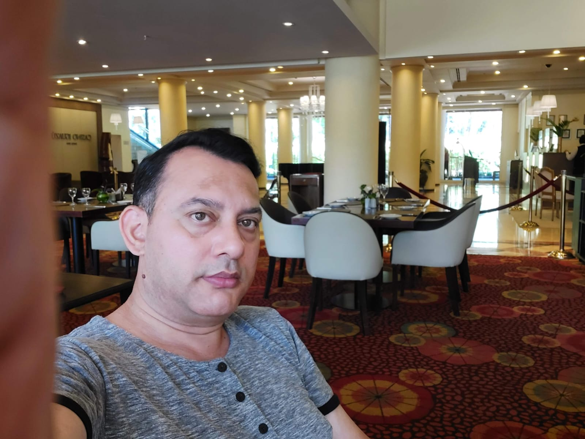

PERFIL INDIVIDUAL

ESTUDIANTE DE DESARROLLO WEB
Angel Dominguez
Soy estudiante de Desarrollo de Sistemas Web y emprendedor. Me interesa adquirir nuevos conocimientos, resolver problemas y participar en proyectos tecnológicos mediante el trabajo colaborativo.
HABILIDADES
Lo que aporto al equipo
Facilidad de aprendizaje
Capacidad para incorporar nuevos conocimientos y herramientas tecnológicas.
Iniciativa emprendedora
Disposición para transformar ideas en proyectos concretos.
Resolución de problemas
Búsqueda de soluciones ante errores o dificultades durante el desarrollo.
Trabajo en equipo
Organización, comunicación y colaboración para alcanzar objetivos grupales.
PELÍCULAS FAVORITAS
DISCOS Y SENCILLOS FAVORITOS